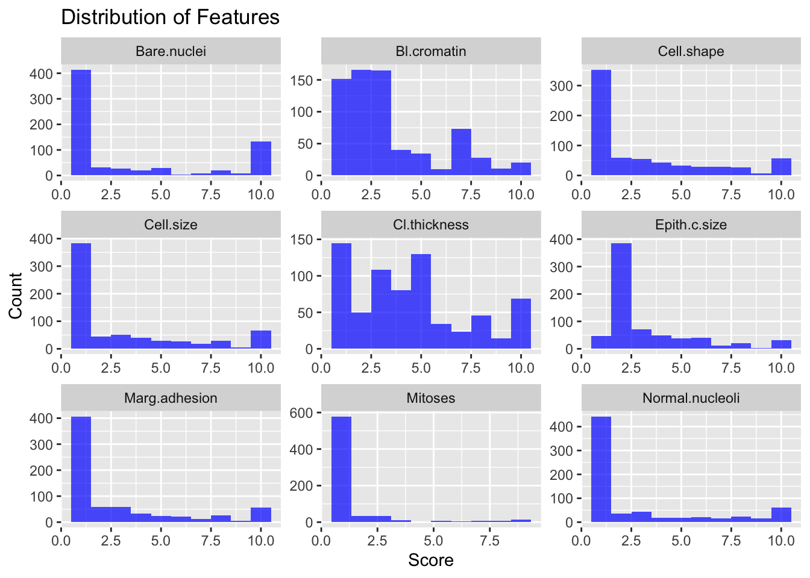
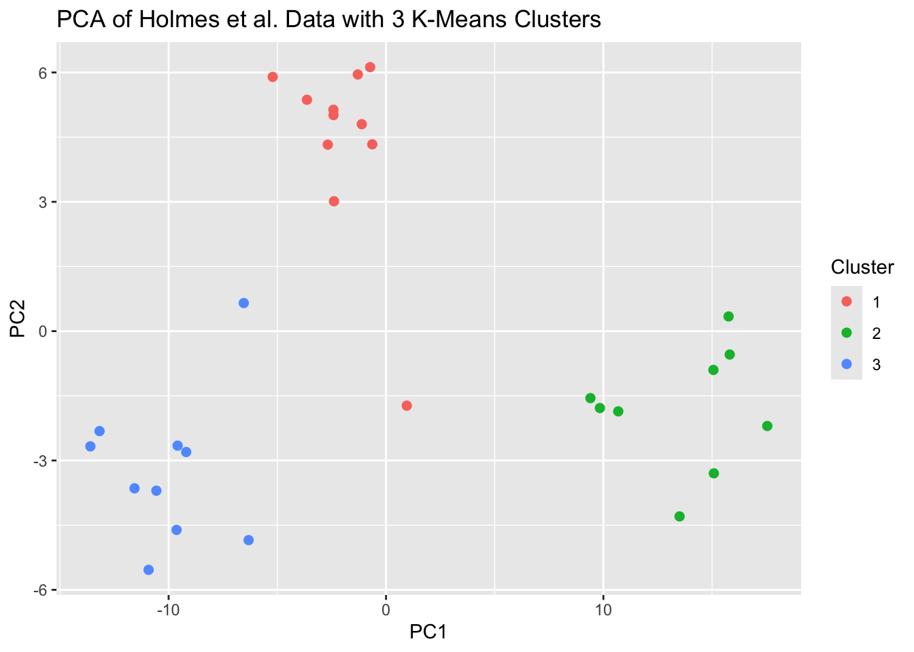
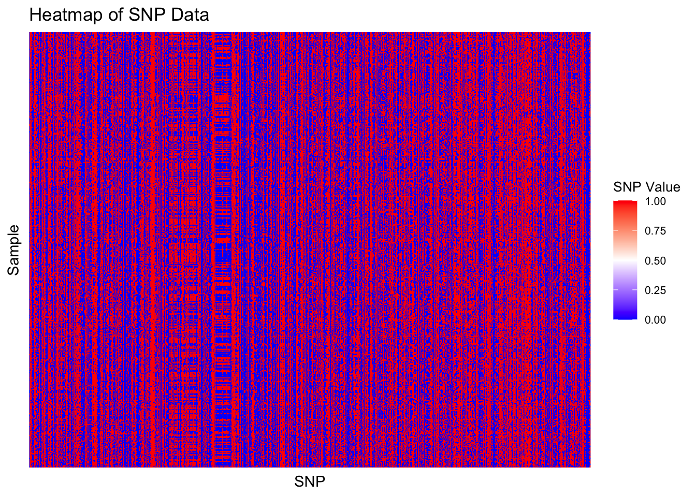
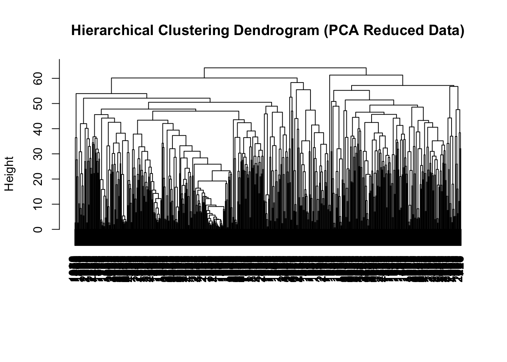

Module 5: Putting it all Together
Lab
Breast Cancer
Introduction
In this example, we’ll use the Breast Cancer dataset. The data contains 699 observations on 11 variables where the response, Class, represents whether a tumor is benign or malignant. Suppose we want to develop a logistic regression classification model. What steps do we need to take to prepare the data for modeling and how should we interpret the model once it’s fit? Finally, how can we adjust the model to be more applicable in clinical settings?
Read in Data
# Load the Breast Cancer dataset
data(BreastCancer)
bc_data <- BreastCancer %>%
as.data.frame() %>%
dplyr::select(-Id)
# Explore the structure of the data
str(bc_data)## 'data.frame': 699 obs. of 10 variables:
## $ Cl.thickness : Ord.factor w/ 10 levels "1"<"2"<"3"<"4"<..: 5 5 3 6 4 8 1 2 2 4 ...
## $ Cell.size : Ord.factor w/ 10 levels "1"<"2"<"3"<"4"<..: 1 4 1 8 1 10 1 1 1 2 ...
## $ Cell.shape : Ord.factor w/ 10 levels "1"<"2"<"3"<"4"<..: 1 4 1 8 1 10 1 2 1 1 ...
## $ Marg.adhesion : Ord.factor w/ 10 levels "1"<"2"<"3"<"4"<..: 1 5 1 1 3 8 1 1 1 1 ...
## $ Epith.c.size : Ord.factor w/ 10 levels "1"<"2"<"3"<"4"<..: 2 7 2 3 2 7 2 2 2 2 ...
## $ Bare.nuclei : Factor w/ 10 levels "1","2","3","4",..: 1 10 2 4 1 10 10 1 1 1 ...
## $ Bl.cromatin : Factor w/ 10 levels "1","2","3","4",..: 3 3 3 3 3 9 3 3 1 2 ...
## $ Normal.nucleoli: Factor w/ 10 levels "1","2","3","4",..: 1 2 1 7 1 7 1 1 1 1 ...
## $ Mitoses : Factor w/ 9 levels "1","2","3","4",..: 1 1 1 1 1 1 1 1 5 1 ...
## $ Class : Factor w/ 2 levels "benign","malignant": 1 1 1 1 1 2 1 1 1 1 ...Here, we load the Breast Cancer dataset and remove the Id column, which is not useful for the analysis. The str() function provides a quick overview of the dataset’s structure, including data types and sample values. Here we see that all variables are factors, but they need to be converted to numeric in order to work with the logistic regression model as well as we need to ensure the values for the class variable is 0 and 1.
Handling Missing Data
Next, we need to check for and handle missing data. We’ll impute the missing values using MICE.
## Cl.thickness Cell.size Cell.shape Marg.adhesion Epith.c.size Bare.nuclei
## 1 0 0 0 0 0 16
## Bl.cromatin Normal.nucleoli Mitoses Class
## 1 0 0 0 0# Impute missing values using multiple imputation
imputed_data <- mice(bc_data, method = 'pmm', m = 5, maxit = 5)##
## iter imp variable
## 1 1 Bare.nuclei
## 1 2 Bare.nuclei
## 1 3 Bare.nuclei
## 1 4 Bare.nuclei
## 1 5 Bare.nuclei
## 2 1 Bare.nuclei
## 2 2 Bare.nuclei
## 2 3 Bare.nuclei
## 2 4 Bare.nuclei
## 2 5 Bare.nuclei
## 3 1 Bare.nuclei
## 3 2 Bare.nuclei
## 3 3 Bare.nuclei
## 3 4 Bare.nuclei
## 3 5 Bare.nuclei
## 4 1 Bare.nuclei
## 4 2 Bare.nuclei
## 4 3 Bare.nuclei
## 4 4 Bare.nuclei
## 4 5 Bare.nuclei
## 5 1 Bare.nuclei
## 5 2 Bare.nuclei
## 5 3 Bare.nuclei
## 5 4 Bare.nuclei
## 5 5 Bare.nucleiExploratory Data Analysis
complete_data %>%
pivot_longer(cols = -Class, names_to = "Feature", values_to = "Value") %>%
ggplot(aes(x = Value)) +
geom_histogram(bins = 10, fill = "blue", alpha = 0.7) +
facet_wrap(~Feature, scales = "free") +
labs(title = "Distribution of Features", x = "Score", y = "Count")
Logistic regression doesn’t assume the variables are normally distributed, so it’s not a big deal but it is something to keep in mind. Next we’ll explore the correlations between the explanatory variables.
## Cl.thickness Cell.size Cell.shape Marg.adhesion Epith.c.size
## Cl.thickness 1.0000000 0.6449125 0.6545891 0.4863562 0.5218162
## Cell.size 0.6449125 1.0000000 0.9068819 0.7055818 0.7517991
## Cell.shape 0.6545891 0.9068819 1.0000000 0.6830792 0.7196684
## Marg.adhesion 0.4863562 0.7055818 0.6830792 1.0000000 0.5995991
## Epith.c.size 0.5218162 0.7517991 0.7196684 0.5995991 1.0000000
## Bare.nuclei 0.5956327 0.6888387 0.7107553 0.6637745 0.5806745
## Bl.cromatin 0.5584282 0.7557210 0.7359485 0.6667153 0.6161018
## Normal.nucleoli 0.5358345 0.7228648 0.7194463 0.6033524 0.6288807
## Mitoses 0.3536126 0.4633205 0.4444613 0.4237040 0.4797305
## Bare.nuclei Bl.cromatin Normal.nucleoli Mitoses
## Cl.thickness 0.5956327 0.5584282 0.5358345 0.3536126
## Cell.size 0.6888387 0.7557210 0.7228648 0.4633205
## Cell.shape 0.7107553 0.7359485 0.7194463 0.4444613
## Marg.adhesion 0.6637745 0.6667153 0.6033524 0.4237040
## Epith.c.size 0.5806745 0.6161018 0.6288807 0.4797305
## Bare.nuclei 1.0000000 0.6803488 0.5774318 0.3498653
## Bl.cromatin 0.6803488 1.0000000 0.6658778 0.3517644
## Normal.nucleoli 0.5774318 0.6658778 1.0000000 0.4315569
## Mitoses 0.3498653 0.3517644 0.4315569 1.0000000Some of these correlations are concerningly high and may suggest multicollinearity in the dataset. There are tests we can use to identify which variables should be removed such as the Variance Inflation Factor, but we’ll simply just remove one of cell.size or cell.shape as they’re too correlated to keep in the analysis. We’ll leave the rest as they’re all under 80% correlated and test for VIF after fitting the model.
Fitting the Logistic Regression Model
# Fit the logistic regression model
logistic_model <- glm(Class ~ ., data = complete_data, family = "binomial")
# Summary of the model
summary(logistic_model)##
## Call:
## glm(formula = Class ~ ., family = "binomial", data = complete_data)
##
## Coefficients:
## Estimate Std. Error z value Pr(>|z|)
## (Intercept) -9.66586 1.04485 -9.251 < 2e-16 ***
## Cl.thickness 0.52176 0.13294 3.925 8.68e-05 ***
## Cell.shape 0.32344 0.16436 1.968 0.0491 *
## Marg.adhesion 0.24261 0.11469 2.115 0.0344 *
## Epith.c.size 0.07856 0.15123 0.519 0.6034
## Bare.nuclei 0.43068 0.09056 4.756 1.97e-06 ***
## Bl.cromatin 0.38799 0.15668 2.476 0.0133 *
## Normal.nucleoli 0.15898 0.10182 1.561 0.1184
## Mitoses 0.55167 0.29499 1.870 0.0615 .
## ---
## Signif. codes: 0 '***' 0.001 '**' 0.01 '*' 0.05 '.' 0.1 ' ' 1
##
## (Dispersion parameter for binomial family taken to be 1)
##
## Null deviance: 900.53 on 698 degrees of freedom
## Residual deviance: 113.12 on 690 degrees of freedom
## AIC: 131.12
##
## Number of Fisher Scoring iterations: 8Model Diagnostics
## Cl.thickness Cell.shape Marg.adhesion Epith.c.size Bare.nuclei
## 1.151218 1.655924 1.184164 1.398379 1.106523
## Bl.cromatin Normal.nucleoli Mitoses
## 1.246424 1.293004 1.023319This indicates that there is minor multicollinearity in among the predictors, but nothing of concern as all values are less than 2.
Model Evaluation
We’ll convert the coefficients to odds ratios to interpret them more easily.
# Calculate odds ratios and confidence intervals
exp(cbind(Odds_Ratio = coef(logistic_model), confint(logistic_model)))## Waiting for profiling to be done...## Odds_Ratio 2.5 % 97.5 %
## (Intercept) 6.341165e-05 6.116644e-06 0.0003871585
## Cl.thickness 1.684996e+00 1.319584e+00 2.2343199988
## Cell.shape 1.381879e+00 1.019681e+00 1.9515273440
## Marg.adhesion 1.274569e+00 1.019167e+00 1.6073405524
## Epith.c.size 1.081732e+00 8.003046e-01 1.4541755020
## Bare.nuclei 1.538307e+00 1.299638e+00 1.8599340303
## Bl.cromatin 1.474016e+00 1.096391e+00 2.0349587906
## Normal.nucleoli 1.172318e+00 9.635958e-01 1.4429380122
## Mitoses 1.736155e+00 1.041184e+00 2.9188993638We can interpret the log odds for the Cl.thickness variable as a one unit increase in Cl.thickness increases the odds of the tumor being malignant by ~1.68 times. We see that the log odds for each variable is relatively similar suggesting that they all have comparable influences on the response.
Lets see how well the model classifies the tumors.
# Predict probabilities on the training set
complete_data$predicted_prob <- predict(logistic_model, type = "response")
# Convert probabilities to class predictions (threshold = 0.5)
complete_data$predicted_class <- ifelse(complete_data$predicted_prob > 0.5, "malignant", "benign")
# Confusion matrix
table(BreastCancer$Class, complete_data$predicted_class)##
## benign malignant
## benign 447 11
## malignant 11 230The confusion table tells us how often the model misclassifies individuals, in the scenario of predicting if a tumor is benign or malignant, would one of these misclassifications be preferable over the other? I.e., would we prefer false negatives more often than false positives or vice-versa?
We can reduce the false negative error rate by being more conservative on deciding what is benign to prevent malignant tumors accidentally being labelled as benign.
# complete_data probabilities to class predictions (threshold = 0.3)
complete_data$conservative_class <- ifelse(complete_data$predicted_prob > 0.3, "malignant", "benign")
# Confusion matrix
table(BreastCancer$Class, complete_data$conservative_class)##
## benign malignant
## benign 445 13
## malignant 8 233Looks like a cutoff of 0.3 is better, but still isn’t conservative enough. We’ll need to be even more conservative than that to prevent false negatives.
Gene Expression
Introduction
In this example, we’ll use a gene expression dataset from a 2005 study by Holmes et al. titled “Memory T cells have gene expression patterns intermediate between naïve and effector”. The dataset contains observations from different T cell types from various individuals measuring 156 of the most differentially expressed genes.
Let’s say we’d like to perform clustering on this dataset to try and replicate the results of the study.
Data Loading and Exploration
First, ensure the dataset is in the same folder as this script to load it and the explore the dataset. Let’s look at the structure of the data.
# Load necessary libraries
library(tidyverse) # general functions
library(cluster) # For clustering
# Load the gene expression dataset
load("./datasets/geneexpression_clustering.rda")
# Take a look at the dataset
attributes(dat)## $names
## [1] "X3968" "X14831" "X13492" "X5108" "X16348" "X585" "X11495" "X17522"
## [9] "X12908" "X17992" "X13154" "X17420" "X8564" "X6421" "X2620" "X8567"
## [17] "X15028" "X16861" "X10468" "X12285" "X1135" "X18495" "X18403" "X7405"
## [25] "X11521" "X720" "X9095" "X11026" "X290" "X14844" "X5684" "X16639"
## [33] "X1971" "X5844" "X5914" "X7486" "X6884" "X8928" "X8992" "X6019"
## [41] "X17295" "X18295" "X15688" "X441" "X18100" "X11142" "X5383" "X3326"
## [49] "X16248" "X3487" "X5942" "X16547" "X6431" "X5717" "X14592" "X5019"
## [57] "X4448" "X17877" "X15612" "X13583" "X4812" "X1177" "X7535" "X11003"
## [65] "X2698" "X8045" "X10298" "X14722" "X5029" "X1811" "X5732" "X5700"
## [73] "X3328" "X6429" "X16673" "X1040" "X5712" "X4276" "X520" "X1356"
## [81] "X17436" "X8944" "X18496" "X7212" "X3367" "X18526" "X7382" "X13009"
## [89] "X4338" "X16476" "X2481" "X18272" "X2673" "X5423" "X1227" "X10030"
## [97] "X10742" "X10029" "X13194" "X10461" "X14427" "X16765" "X839" "X16207"
## [105] "X11812" "X8392" "X7965" "X15754" "X7555" "X17679" "X3295" "X8330"
## [113] "X6016" "X12268" "X1254" "X14489" "X9683" "X2705" "X18109" "X9906"
## [121] "X9451" "X11559" "X15724" "X12049" "X15214" "X13368" "X12562" "X16840"
## [129] "X15431" "X14947" "X14974" "X1048" "X5240" "X7374" "X10512" "X5926"
## [137] "X5624" "X18405" "X11913" "X4903" "X13082" "X9513" "X14753" "X12206"
## [145] "X12282" "X6299" "X15659" "X14998" "X7315" "X16470" "X2413" "X8935"
## [153] "X6853" "X18398" "X16962" "X8486"
##
## $row.names
## [1] "HEA26_EFFE_1" "HEA26_MEM_1" "HEA26_NAI_1" "MEL36_EFFE_1" "MEL36_MEM_1"
## [6] "MEL36_NAI_1" "HEA31_EFFE_2" "HEA31_MEM_2" "HEA31_NAI_2" "MEL39_EFFE_2"
## [11] "MEL39_MEM_2" "MEL39_NAI_2" "HEA25_EFFE_3" "HEA25_MEM_3" "HEA25_NAI_3"
## [16] "MEL53_EFFE_3" "MEL53_NAI_3b" "MEL53_NAI_3" "HEA55_EFFE_4" "HEA55_MEM_4"
## [21] "HEA55_NAI_4" "MEL67_EFFE_4" "MEL67_MEM_4" "MEL67_NAI_4" "HEA59_EFFE_5"
## [26] "HEA59_MEM_5" "HEA59_NAI_5" "MEL51_EFFE_5" "MEL51_MEM_5" "MEL51_NAI_5"
##
## $class
## [1] "data.frame"Now that we know the structure of the dataset, lets see what the values look like.
## X3968 X14831 X13492 X5108
## Min. :-3.6256 Min. :-1.3489 Min. :-0.352926 Min. :-0.4470
## 1st Qu.:-2.5311 1st Qu.:-0.8397 1st Qu.:-0.007223 1st Qu.:-0.1688
## Median :-1.9831 Median :-0.3538 Median : 0.221656 Median : 0.5594
## Mean :-1.5977 Mean :-0.1786 Mean : 0.300380 Mean : 0.3921
## 3rd Qu.:-0.3518 3rd Qu.: 0.4933 3rd Qu.: 0.753449 3rd Qu.: 0.8013
## Max. : 0.3073 Max. : 1.1152 Max. : 1.054197 Max. : 1.2097
## X16348 X585 X11495 X17522
## Min. :-1.4066 Min. :-0.16199 Min. :-2.2375 Min. :-0.7677
## 1st Qu.:-0.8942 1st Qu.: 0.07235 1st Qu.:-1.7353 1st Qu.: 0.1168
## Median :-0.3688 Median : 0.33344 Median :-1.1957 Median : 0.7129
## Mean :-0.2931 Mean : 0.47498 Mean :-1.3028 Mean : 0.7489
## 3rd Qu.: 0.3422 3rd Qu.: 0.86154 3rd Qu.:-0.9895 3rd Qu.: 1.3361
## Max. : 1.1339 Max. : 1.54366 Max. :-0.6215 Max. : 2.3478
## X12908 X17992
## Min. :1.419 Min. :-0.4004
## 1st Qu.:2.615 1st Qu.: 0.2587
## Median :3.940 Median : 0.8323
## Mean :3.770 Mean : 0.9033
## 3rd Qu.:4.813 3rd Qu.: 1.4249
## Max. :5.905 Max. : 2.5390Looks like we’ll need to scale our dataset.
K-means Clustering
wcss <- map(2:20, function(k) {
kmeans(scaled.data, centers = k, nstart = 10)$tot.withinss
})
# Plot WCSS against the number of clusters
plot(2:20, wcss, type = "b", pch = 19, frame = FALSE,
xlab = "Number of Clusters K",
ylab = "Within-Clusters Sum of Squares",
main = "Elbow Method for Determining Optimal Number of Clusters")
There’s a fairly steep decline from 2 to 3 clusters, but not much of a difference after that. Looks like 3 clusters may be an ideal number.
PCA
Let’s evaluate using PCA:
kmeans.result <- kmeans(scaled.data, centers = 3, nstart = 10)
pca_results <- prcomp(scaled.data, center = TRUE, scale. = TRUE)
pca_data <- data.frame(pca_results$x, Cluster = as.factor(kmeans.result$cluster))
ggplot(pca_data, aes(PC1, PC2, color = Cluster)) +
geom_point(size = 2) +
labs(title = "PCA of Holmes et al. Data with 3 K-Means Clusters")
With the exception of two outliers in the middle of the graph, the PCA plot also appears to indicate that there are 3 clusters.
Silhouette Analysis
Let’s see if the silhouette analysis agrees with three clusters.
silhouette.values <- map(2:10, function(k){
Kmeans.res <- kmeans(scaled.data, centers = k, nstart = 10)
silhouette.score <- silhouette(Kmeans.res$cluster, dist(scaled.data))
mean(silhouette.score[, 3])
})
plot(2:10, silhouette.values, type="b", pch = 19, frame = FALSE,
xlab="Number of Clusters K",
ylab="Average Silhouette Width")
From this plot it seems that 6 clusters would be more accurate, but this doesn’t align with our previous results. Perhaps this can be further explored through hierarchical clustering.
Hierarchical Clustering
# Perform hierarchical clustering
hc.res <- hclust(dist(scaled.data), method = "complete")
# Plot the dendrogram
plot(hc.res, main = "Hierarchical Clustering Dendrogram", xlab = "", sub = "")
The dendrogram indicates that there likely is a benefit to using 6 clusters for higher accuracy as suggested by the silhouette analysis, but overall there appears to be 3 primary clusters. So, the results of our clustering suggest that there is likely 3 types of T cells with. This confirms the findings from Holmes et al in that there appears to exist an intermediate memory T cell between the known naïve and effector cells.
Genomic Prediction
Introduction
In this example we’ll be analyzing data from a collection of 599 historical CIMMYT wheat lines. The lines were genotyped using 1447 Diversity Array Technology (DArT). The DArT markers can take on two values, denoted by their presence or absence. Markers with a minor allele frequency lower than 0.05 were removed.
What is the goal of this analysis? We want to predict the yields of different wheat varieties using SNP data. For this, we can use either a traditional linear model paired with dimension reduction techniques to include the SNP data, or we can use a method which is able to handle the dimensions of the dataset such as penalized regression or random forest methods.
We’ll fit and compare two genomic prediction models for this purpose to assess the impact that SNP data has on model accuracy relative to a more simplistic model. We’ll also identify the most influential SNPs for predicting yield.
Read in Data
# Load the wheat dataset
data(wheat)
geno <- wheat.X # SNP genotypes
pheno <- wheat.Y # Phenotype data
# Explore the structure of the data
dim(geno) # Dimensions of the genotype matrix## [1] 599 1279## [1] 599 4# Combine genotype and phenotype data into one dataframe
genomic_data <- as.data.frame(geno)
# Need to reformat yield data to account for location differences.
wheat_data <- pheno %>%
as.data.frame() %>%
rownames_to_column(var = "ID") %>%
bind_cols(., genomic_data) %>%
pivot_longer(cols = c("1":"5"), values_to = "yield", names_to = "environment")
# Set seed for reproducibility
set.seed(123)Exploratory Data Analysis
## [1] 0# Visualize the distribution of the yield
ggplot(wheat_data, aes(yield)) +
geom_histogram(fill = "lightblue", color = "black") +
theme_minimal() +
labs(title = "Distribution of Wheat Yield") +
facet_grid(rows = vars(environment))## `stat_bin()` using `bins = 30`. Pick better value with
## `binwidth`.
No missing values and the response is relatively normally distributed. Let’s take a closer look at the SNP data next.
# Convert matrix to a data frame in long format and scale
snp_long <- genomic_data %>%
rownames_to_column(var = "Sample") %>%
pivot_longer(cols = -Sample, names_to = "SNP", values_to = "Value")
ggplot(snp_long, aes(x = SNP, y = Sample, fill = Value)) +
geom_tile() +
scale_fill_gradientn(colors = c("blue", "white", "red"), na.value = "grey50") +
theme_minimal() +
theme(
axis.text.x = element_blank(),
axis.text.y = element_blank(),
legend.title = element_text(size = 10),
legend.text = element_text(size = 8)
) +
labs(
title = "Heatmap of SNP Data",
x = "SNP",
y = "Sample",
fill = "SNP Value"
)
We see that some SNPs are quite variable among the different samples and others are consistent among almost all samples. The heatmap can also help guide our decision on clustering size. Are there are areas which indicate that there may exist clusters within the SNP data?
Feature Engineering
We’ll use hierarchical clustering based on SNP data to create a new variable for the cluster each wheat line belongs to. However, the SNP data is too large to work with the hierarchical clustering algorithm and so we’ll need to reduce the dimensions of the data by using PCA.
# Perform PCA to reduce dimensionality
pca <- prcomp(wheat_data %>%
dplyr::select(-ID, -environment, -yield), scale. = TRUE)
pca_data <- pca$x[, 1:50] # Keep the first 50 principal components
# Perform hierarchical clustering on the PCA-reduced data
hc.res <- hclust(dist(pca_data), method = "complete")
# Plot the dendrogram
plot(hc.res, main = "Hierarchical Clustering Dendrogram (PCA Reduced Data)", xlab = "", sub = "")
Splitting the data into training and testing sets
Training.data <- wheat_data %>%
slice_sample(prop = 0.8)
Train.X <- Training.data %>%
dplyr::select(-yield) %>%
as.matrix()
Train.Y <- Training.data %>%
dplyr::select(yield) %>%
as.matrix()
Testing.data <- wheat_data %>%
anti_join(., Training.data, by = 'ID')
Test.X <- Testing.data %>%
dplyr::select(-yield) %>%
as.matrix()
Test.Y <- Testing.data %>%
dplyr::select(yield) %>%
as.matrix()Fitting the Linear Regression Model
# Perform PCA to reduce dimensionality of the training set
pca.train <- prcomp(Training.data %>%
dplyr::select(-ID, -environment, -yield, -clusterID), scale. = TRUE)
# Visualize the variance explained by the principal components
explained.variance.train <- pca.train$sdev^2 / sum(pca.train$sdev^2)
plot(cumsum(explained.variance.train), type = "b", xlab = "Principal Component", ylab = "Cumulative Proportion of Variance Explained")
# Use the first 50 principal components for regression
pc.train.data <- Training.data %>%
dplyr::select(yield, environment, clusterID) %>%
bind_cols(., as.data.frame(pca.train$x[, 1:50]))
# Fit a linear regression model using the principal components
pc.model <- lm(yield ~ ., data = pc.train.data)
summary(pc.model)##
## Call:
## lm(formula = yield ~ ., data = pc.train.data)
##
## Residuals:
## Min 1Q Median 3Q Max
## -3.3917 -0.5576 0.0028 0.5824 4.6377
##
## Coefficients:
## Estimate Std. Error t value Pr(>|t|)
## (Intercept) 0.1485066 0.0679878 2.184 0.029064 *
## environment2 -0.0247689 0.0610846 -0.405 0.685167
## environment4 -0.0386075 0.0608749 -0.634 0.526021
## environment5 -0.0235613 0.0606632 -0.388 0.697768
## clusterID -0.0187430 0.0082844 -2.262 0.023786 *
## PC1 -0.0104336 0.0017866 -5.840 6.15e-09 ***
## PC2 0.0092514 0.0034244 2.702 0.006963 **
## PC3 -0.0058146 0.0029066 -2.000 0.045593 *
## PC4 0.0127650 0.0038265 3.336 0.000867 ***
## PC5 -0.0047038 0.0038602 -1.219 0.223176
## PC6 0.0113601 0.0043174 2.631 0.008578 **
## PC7 0.0025685 0.0042603 0.603 0.546647
## PC8 -0.0106173 0.0047132 -2.253 0.024395 *
## PC9 -0.0011001 0.0045173 -0.244 0.807629
## PC10 -0.0087026 0.0047390 -1.836 0.066462 .
## PC11 0.0076697 0.0048709 1.575 0.115519
## PC12 -0.0194537 0.0050130 -3.881 0.000108 ***
## PC13 -0.0018052 0.0052696 -0.343 0.731963
## PC14 -0.0134353 0.0054239 -2.477 0.013335 *
## PC15 0.0336981 0.0060249 5.593 2.56e-08 ***
## PC16 0.0090107 0.0057304 1.572 0.116014
## PC17 0.0223557 0.0059082 3.784 0.000159 ***
## PC18 0.0125792 0.0061697 2.039 0.041603 *
## PC19 -0.0098447 0.0065142 -1.511 0.130889
## PC20 -0.0076416 0.0062673 -1.219 0.222889
## PC21 0.0131265 0.0064692 2.029 0.042592 *
## PC22 -0.0166280 0.0065171 -2.551 0.010807 *
## PC23 -0.0081897 0.0066747 -1.227 0.219989
## PC24 0.0009932 0.0067320 0.148 0.882728
## PC25 -0.0044518 0.0068761 -0.647 0.517429
## PC26 0.0055179 0.0069118 0.798 0.424779
## PC27 -0.0064941 0.0070939 -0.915 0.360078
## PC28 -0.0159080 0.0072135 -2.205 0.027555 *
## PC29 0.0076475 0.0074509 1.026 0.304842
## PC30 0.0189453 0.0075887 2.496 0.012629 *
## PC31 -0.0113872 0.0078006 -1.460 0.144521
## PC32 -0.0081352 0.0078857 -1.032 0.302376
## PC33 0.0057140 0.0078418 0.729 0.466297
## PC34 0.0169144 0.0080808 2.093 0.036471 *
## PC35 0.0090292 0.0080355 1.124 0.261299
## PC36 0.0114195 0.0080589 1.417 0.156652
## PC37 -0.0081752 0.0084276 -0.970 0.332144
## PC38 -0.0112747 0.0086254 -1.307 0.191320
## PC39 -0.0073442 0.0083040 -0.884 0.376584
## PC40 -0.0080432 0.0084042 -0.957 0.338667
## PC41 0.0239955 0.0086044 2.789 0.005345 **
## PC42 0.0221131 0.0085878 2.575 0.010102 *
## PC43 0.0123761 0.0086486 1.431 0.152601
## PC44 -0.0216049 0.0088338 -2.446 0.014549 *
## PC45 0.0441585 0.0089049 4.959 7.73e-07 ***
## PC46 -0.0192109 0.0094229 -2.039 0.041617 *
## PC47 0.0037487 0.0091485 0.410 0.682030
## PC48 0.0073421 0.0092293 0.796 0.426410
## PC49 0.0049651 0.0092667 0.536 0.592165
## PC50 0.0009806 0.0095081 0.103 0.917868
## ---
## Signif. codes: 0 '***' 0.001 '**' 0.01 '*' 0.05 '.' 0.1 ' ' 1
##
## Residual standard error: 0.9408 on 1861 degrees of freedom
## Multiple R-squared: 0.1318, Adjusted R-squared: 0.1066
## F-statistic: 5.233 on 54 and 1861 DF, p-value: < 2.2e-16# Model evaluation - need to recalculate PCs on the testing data using the trainingset PC model
pc.test.data <- Testing.data %>%
dplyr::select(-ID, -environment, -yield, -clusterID) %>%
scale(center = pca.train$center, scale = pca.train$scale) %>%
as.data.frame()
# Transform the testing set using the rotation matrix from the training set
pc.test.data <- as.matrix(pc.test.data) %*% pca.train$rotation
# Select the first 50 principal components for the testing set
pc.test.data <- Testing.data %>%
dplyr::select(yield, environment, clusterID) %>%
bind_cols(., as.data.frame(pc.test.data[, 1:50]))
# Make predictions on the testing set
pc_test_predictions <- predict(pc.model, pc.test.data)
# Calculate MSPE
mean((pc_test_predictions - pc.test.data$yield)^2)## [1] 0.5627026Fitting the Random Forest Model
# Train the model using all predictors
rf.model <- randomForest(yield ~ . -ID,
data = Training.data,
importance = TRUE,
ntree = 100)
# View the model summary
print(rf.model)##
## Call:
## randomForest(formula = yield ~ . - ID, data = Training.data, importance = TRUE, ntree = 100)
## Type of random forest: regression
## Number of trees: 100
## No. of variables tried at each split: 427
##
## Mean of squared residuals: 0.8857231
## % Var explained: 10.56# Predict on the testing set
rf.predictions <- predict(rf.model, newdata = Testing.data)
# Calculate Mean Squared Prediction Error (MSPE)
mspe <- mean((rf.predictions - Testing.data$yield)^2)
print(paste("Random Forest MSPE:", mspe))## [1] "Random Forest MSPE: 0.446850785287796"Let’s explore which variables were most influential in the random forest model.
# Get variable importance
importance.scores <- rf.model %>%
importance() %>%
as.data.frame()
# Sort the SNPs by importance
importance.df <- importance.scores[order(importance.scores$IncNodePurity, decreasing = TRUE), ]
# View the top 10 most important SNPs
head(importance.df, 10)## %IncMSE IncNodePurity
## environment 14.029983 226.304386
## wPt.3533 6.680649 17.075117
## clusterID 4.136805 11.944214
## c.378212 3.865563 9.409974
## c.379495 3.659103 8.087316
## c.375127 3.297306 7.964841
## c.344179 3.582840 6.256734
## c.344544 3.236063 6.046233
## c.379274 2.572558 5.593142
## c.381717 3.376430 5.387462The increase in MSE variable measures the decrease in model accuracy when the values of a specific feature are randomly permuted while keeping other features unchanged. The increase in node purity variable tells us that the feature is important in differentiating between different outcomes.
# Plot the top 10 most important variables
ggplot(importance.df[1:10, ], aes(x = reorder(rownames(importance.df)[1:10], IncNodePurity), y = IncNodePurity)) +
geom_bar(stat = "identity") +
coord_flip() +
xlab("Variables") +
ylab("Increase in Node Purity") +
ggtitle("Top 10 Most Influential Variables in Random Forest Model")
Lab Completed!
Congratulations! You have completed Lab 5!